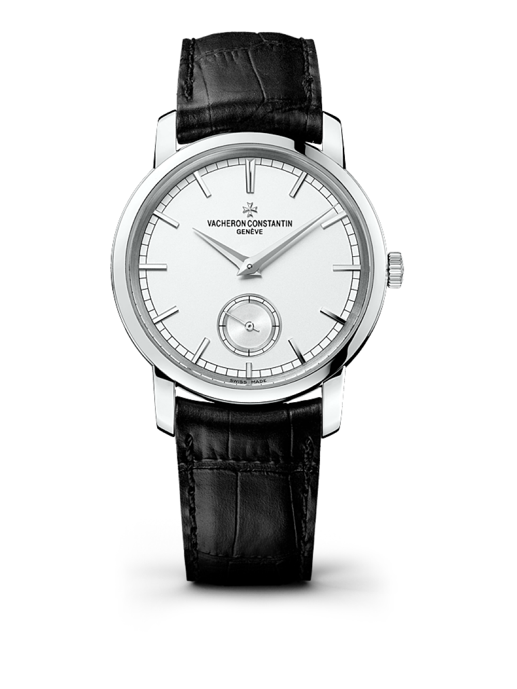
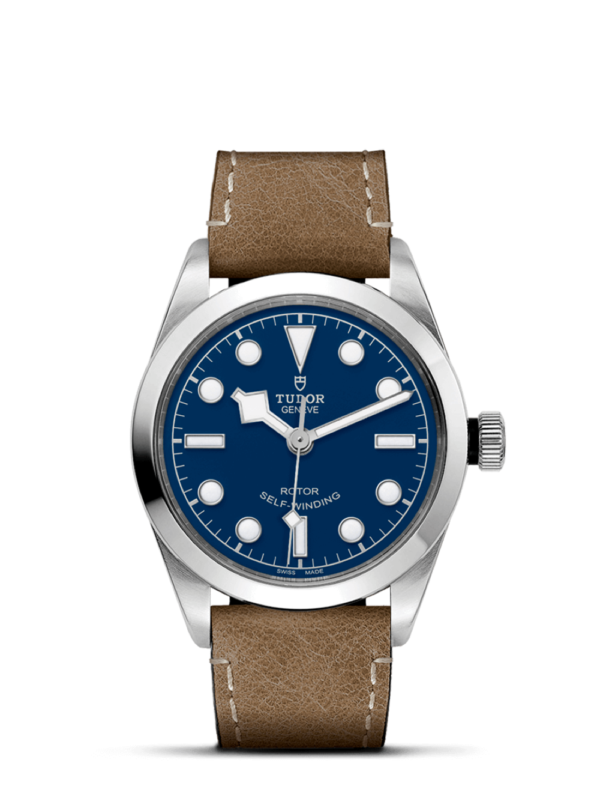

Popular
Models

Vecheron Constantin
Thee watch also features a tough and
durable supphir crystal glass and comes
with a Swiss SW-200-1 automatic winding
movement thas has a power reserve

Tudor Geneve
Thee watch also features a tough and
durable supphir crystal glass and
comes with a Swiss SW12-1 automatic winding
Product Description
Inspired by the WWI watches, this watch has
a modern design with an urban style and a
vintage soul. The Concrete Sector watch by 22-design studio
reinterprets the old concrete
dial watch. Handmade in Taiwan, the dial is cast from
a single piece using the betone technique
more detailed